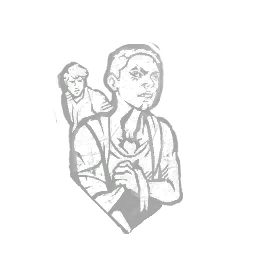

干净利落 Clean Break
所属：陶莉·凯恩（逃生者）
| 等级 | 档位 1 | 档位 2 | 档位 3 |
|---|---|---|---|
| 数值 | 75 1 | 60 | 45 |
描述
“说到底，每个人都得为自己着想。”在完成对另一名逃生者的治疗动作后，彻底了断激活。在被另一名逃生者治疗时按下主动能力键，触发以下效果：承受不治状态。75/60/45秒后，你将自动恢复1点健康状态。若你进入濒死状态，此效果会提前取消。如果你已承受不治状态，则彻底了断无法激活。在你被治愈后，彻底了断会失效。“我没事！别为我冒险。” —— 陶里·凯恩